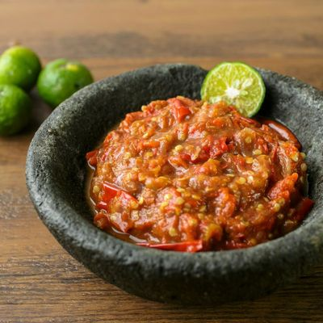

Sambal Terasi - Indonesian Shrimp Paste Chilli Sauce

Sambal is basically a hot chilli paste condiment. Among the many type of Sambal available in Indonesia, the most popular is Sambal Terasi.
There are no concrete ingredients in making this chilli paste as each and every family have their own "Secret Ingredient" that they add into the Base Ingredients. So what are the Base Ingredients? They are Red Chilli, Garlic, Onion and Shrimp Paste. And here is my version of Sambal Terasi
What you need
- 10pcs Fresh Red Chilli
- 25gr Dried Red Chilli
- 3 Large Shallot, thinly sliced
- 1 Large Onion
- 5 Garlic Cloves
- 1 Large Tomato
- 1.5tbsp Shrimp Paste
- 5 Lime Leaves
- 2tbsp Cooking Oil
- 1tbsp Salt
- 2tbsp Sugar
- 0.5tbsp MSG(optional)
- 2tbsp Kecap Manis(Sweet Soya Sauce)
How to prepare
- Put all the ingredients except the Shallot and Lime Leaves in the blender
- Heat up 10tbsp of Cooking Oil in the pan
- Fry the thinly sliced Shallot until light brown
- Pour in the blended ingredients and the Lime Leaves
- Keep stirring for 5 Minutes
- Turn down the heat to medium
- Keep stirring till aromatic and the water vaporated away(Roughly 10-15 Minutes)
- Voilà! It's done!